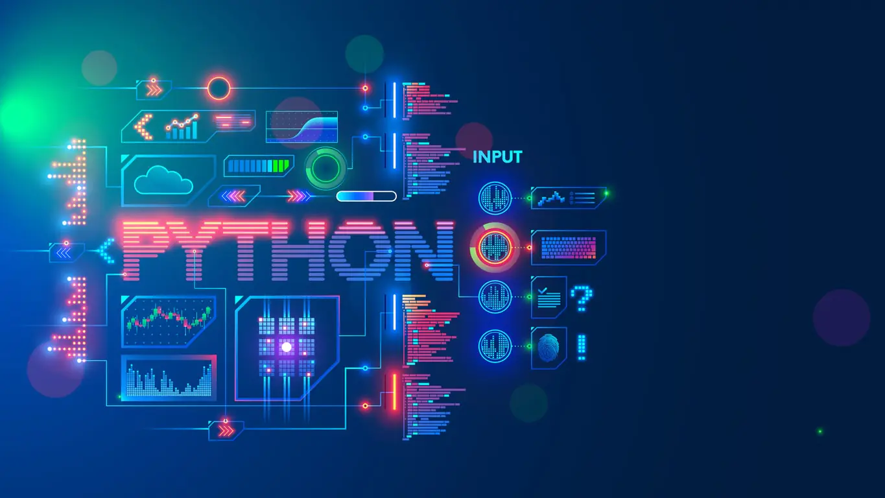

Python is a versatile and high-level programming language that has gained immense popularity for its readability, simplicity, and extensive support libraries. Guido van Rossum created Python in the late 1980s, and its design philosophy emphasizes code readability and ease of use, making it an excellent choice for beginners and experienced developers alike. Python's syntax allows developers to express concepts in fewer lines of code compared to languages like C++ or Java, fostering a more productive and efficient coding experience. The language's clear and straightforward syntax also contributes to its readability, making it easier for teams to collaborate on projects.
Python is a versatile and high-level programming language that has gained immense popularity for its readability, simplicity, and extensive support libraries. Guido van Rossum created Python in the late 1980s, and its design philosophy emphasizes code readability and ease of use, making it an excellent choice for beginners and experienced developers alike. Python's syntax allows developers to express concepts in fewer lines of code compared to languages like C++ or Java, fostering a more productive and efficient coding experience. The language's clear and straightforward syntax also contributes to its readability, making it easier for teams to collaborate on projects.
|  |
Python's success can be attributed to its emphasis on code readability and simplicity, which align with the philosophy of "Zen of Python." This philosophy encourages developers to write code that is clear, concise, and easy to understand, promoting a collaborative and maintainable coding environment. The indentation-based syntax of Python enforces a consistent and visually appealing code structure, reducing the likelihood of syntax errors and enhancing overall code quality. As a result, Python has become an ideal language for both beginners learning programming and experienced developers working on large-scale projects. The open-source nature of Python has also contributed significantly to its widespread adoption. Python's community-driven development model fosters collaboration and innovation. The Python Software Foundation (PSF) oversees the language's development, ensuring transparency and inclusivity. The availability of source code and the ability to modify and redistribute it have empowered developers worldwide to contribute to Python's growth, resulting in a vibrant ecosystem of packages, frameworks, and tools. This collaborative spirit has led to continuous improvements, with regular updates and enhancements that keep Python at the forefront of modern programming languages. Python's success can be attributed to its emphasis on code readability and simplicity, which align with the philosophy of "Zen of Python." This philosophy encourages developers to write code that is clear, concise, and easy to understand, promoting a collaborative and maintainable coding environment. The indentation-based syntax of Python enforces a consistent and visually appealing code structure, reducing the likelihood of syntax errors and enhancing overall code quality. As a result, Python has become an ideal language for both beginners learning programming and experienced developers working on large-scale projects. |
In recent years, Python has seen a surge in popularity in emerging fields such as data science, machine learning, and artificial intelligence. Its simplicity, coupled with powerful libraries and frameworks, has made it the language of choice for researchers and practitioners in these domains. Libraries like scikit-learn, PyTorch, and Keras provide robust tools for developing complex machine learning models, while Jupyter notebooks facilitate interactive and exploratory data analysis. The ease of integration with popular data visualization tools and platforms further solidifies Python's position as a dominant force in the rapidly evolving landscape of data-driven technologies.
In conclusion, Python's success story is multifaceted, encompassing its readability, simplicity, community-driven development model, and adaptability to a wide range of applications. Its enduring popularity is a testament to its ability to cater to diverse needs within the programming community and its continuous evolution to meet the demands of modern software development. Whether used for web development, scientific computing, or cutting-edge technologies like machine learning, Python's versatility and community support make it a language that continues to shape the future of programming.